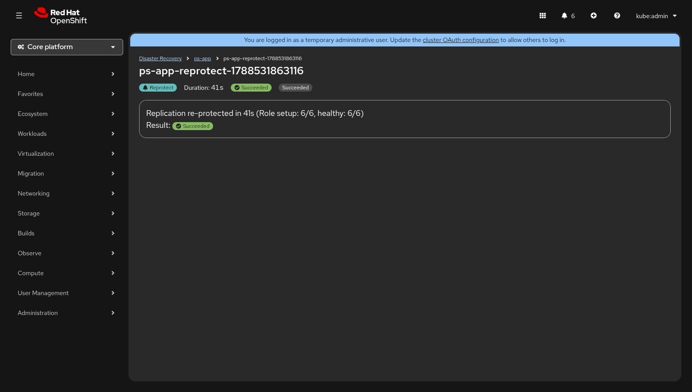

Execution Monitor¶
The Execution Monitor is the real-time detail view for a running or completed
DRExecution. It is designed to be readable on a bridge-call screen share —
every metric updates within five seconds of a state change (NFR-7) so the
on-call team always sees current progress.
You reach the Execution Monitor by clicking any row in the Execution History table on the Plan Detail page, or by following the View execution details link in the transition progress banner that appears while an execution is active.

Page Layout¶
The Execution Monitor is arranged top-to-bottom in four sections:
| Section | Description |
|---|---|
| Execution Header | Name, mode badge, timing, result badge, and retry controls |
| Site Coordination Panel | Source / target site step progress (planned migrations only) |
| Wave Progress Stepper | Vertical stepper with one step per wave; expandable DRGroup detail |
| Execution Summary | Completion card with bridge-call-ready one-liner and final result |
Each section is described in detail below.
Execution Header¶
The header is the first thing visible when the page loads. Its content adapts to whether the execution is still running or has completed.
While Running¶
| Element | Description |
|---|---|
| Execution name | The DRExecution resource name (e.g. ps-app-reprotect-1788531863116) |
| Mode badge | Colour-coded label —  Disaster Failover, Disaster Failover,  Planned Migration, or Reprotect Planned Migration, or Reprotect |
| Phase | Current execution phase (Pending, Executing, etc.) |
| Started | Wall-clock start time (local timezone, HH:MM format) |
| Elapsed | Live counter ticking every second |
| Est. remaining | Calculated from elapsed ÷ completed_waves × remaining_waves; shows calculating… until the first wave finishes |
After Completion¶
| Element | Description |
|---|---|
| Execution name | Same as above |
| Mode badge | Same colour-coded label |
| Duration | Total wall-clock time from start to completion |
| Result badge |  Succeeded, Succeeded,  Partial, or Failed Partial, or Failed |
| Phase | Final phase label |
| Retry All Failed | Appears only when the result is Partially Succeeded and more than one DRGroup failed. Applies the soteria.io/retry-groups annotation to re-execute every failed group. The button is disabled while a retry is already in progress. |
Site Coordination Panel¶
For Planned Migration executions, a Site Coordination card appears between the header and the wave stepper. It visualises the Step 0 handshake that must complete before wave processing begins.
The panel contains two lanes displayed side by side:
| Lane | Steps shown |
|---|---|
| Source (active site) | Demoting Volumes → Demotion Synced |
| Target (standby site) | Promoting Volumes |
Each step shows one of three states:
 Complete — green check icon
Complete — green check icon- :spinner: In progress — spinning indicator with a "Updated Xs ago" timestamp
 Pending — grey clock icon
Pending — grey clock icon
The panel auto-hides once all coordination steps are complete and wave processing has started, so it does not consume screen space during the main phase of the execution.
Note
The Site Coordination Panel does not appear for Disaster Failover executions because disaster mode skips the graceful demotion handshake.
Wave Progress Stepper¶
The central section of the Execution Monitor is a vertical progress
stepper (PatternFly ProgressStepper). Each step represents one wave from
the DRPlan and shows real-time progress as DRGroups within that wave are
processed.
Wave States¶
Each wave step displays a colour and icon based on its current state:
| State | Icon / Colour | Meaning |
|---|---|---|
| Pending | Grey clock | Wave has not started yet |
| In Progress | Blue info | Wave is actively processing DRGroups |
| Completed | Green check | All DRGroups in the wave succeeded |
| Partially Failed | Yellow warning | Wave finished but one or more DRGroups failed |
The step description line shows the VM count and, once the wave has started, the elapsed time (e.g. "4 VMs — 1m 23s").
DRGroup Detail (Expandable)¶
Each wave step contains a collapsible group list that auto-expands for waves that are In Progress or Partially Failed. You can manually toggle any wave with the Show groups / Hide groups control.
Inside the expanded section every DRGroup is displayed as a row with:
| Column | Content |
|---|---|
| Group name | Bold label (e.g. web-tier) |
| VMs | Comma-separated VM names in subdued text |
| Status icon | Spinner (in progress), green check (completed), red exclamation (failed), or grey clock (pending) |
| Elapsed | Monospace timer showing how long the group has been processing |
DRGroup Status Icons¶
| Status | Icon | Colour |
|---|---|---|
| In Progress / Waiting for VM Ready | Spinner | Blue |
| Completed | Check circle | Green |
| Failed | Exclamation circle | Red |
| Pending | Clock | Grey |
Inline Errors and Retry¶
When a DRGroup fails, an Error details expandable section appears directly below the group row. It is expanded by default so operators notice failures immediately.
Error Detail Contents¶
| Field | Description |
|---|---|
| Error | The error message from the controller (e.g. "timed out waiting for volume promotion") |
| Failed step | The specific reconciliation step that failed (e.g. PromoteVolumes, WaitForVMReady) |
| Affected VMs | List of VMs in the failed group |
| Retry count | How many times the group has already been retried (e.g. "Previously retried 2 times") |
Retry Actions¶
Retry buttons appear only when the overall execution result is Partially Succeeded — meaning at least one group succeeded and the execution is no longer active.
| Action | Scope | Where |
|---|---|---|
| Retry (per-group) | Re-executes a single failed DRGroup | Inside the error detail section for that group |
| Retry All Failed | Re-executes every failed DRGroup across all waves | In the execution header (visible when >1 group failed) |
Both actions work by patching the soteria.io/retry-groups annotation on
the DRExecution resource. While a retry is in progress, all retry buttons
are disabled and display a tooltip: "Retry in progress — wait for current
retry to complete".
If the controller rejects a retry (e.g. because the execution is still active), a red Retry rejected inline alert appears beneath the button.
Execution Summary¶
Once the execution completes, a summary card appears below the wave stepper. This card is designed to be the single most useful artefact for a bridge call — it provides a one-line summary and the final result badge.
Summary Text by Mode¶
| Mode | Succeeded | Partially Succeeded / Failed |
|---|---|---|
| Planned Migration / Disaster | "N VMs recovered in Xm Ys" | "M of N VMs recovered — K DRGroup failed" |
| Reprotect | "Replication re-protected in Xs (Role setup: N/N, healthy: N/N)" | "Re-protect failed — \<detail>" |
The Result line shows the same colour-coded badge used throughout the UI:
| Result | Badge colour | Icon |
|---|---|---|
| Succeeded | Green | Check circle |
| Partial | Yellow |  Warning triangle Warning triangle |
| Failed | Red |  Exclamation circle Exclamation circle |
Partial Success Visualisation¶
When an execution finishes with a Partially Succeeded result, multiple visual cues help the operator understand what happened:
- Header — the result badge shows a yellow Partial label and the Retry All Failed button appears.
- Wave stepper — any wave that contains failed groups shows a yellow warning step icon instead of a green check. The wave auto-expands to reveal which groups failed.
- DRGroup rows — failed groups display a red exclamation icon and their error detail section is expanded by default.
- Summary card — the one-liner reports how many VMs were recovered versus the total, along with the count of failed DRGroups.
This layered approach ensures that partial failures are impossible to miss at any zoom level — from a quick glance at the header badge down to the specific failed step and error message.
Execution History¶
The Execution History table lives on the History tab of the Plan Detail page. It provides a chronological record of every execution for a given DRPlan.

| Column | Description |
|---|---|
| Date | Start timestamp in local format (e.g. Sep 4, 2026, 01:00 PM) |
| Mode | Human-readable mode: Planned Migration, Disaster, or Re-protect |
| Phase | Final phase (e.g. Succeeded) |
| Result | Colour-coded badge — Succeeded (green), Partial (yellow), Failed (red) |
| Duration | Wall-clock elapsed time (e.g. 1m 50s, 39m 53s) |
| Triggered By | The user or service account that created the execution (from the soteria.io/triggered-by annotation) |
Rows are sorted newest-first. Clicking any row navigates to the full Execution Monitor for that execution.
Accessibility¶
The Execution Monitor includes several accessibility features:
- Live region announcements — a hidden
aria-live="polite"region announces wave completions (e.g. "Wave 2 completed. Wave 3 starting.") and the final result ("Execution completed. Result: Succeeded."). - Labelled steps — every wave step and DRGroup carries an
aria-labeldescribing its current state. - Keyboard navigation — all expandable sections and buttons are reachable via keyboard tab order.
- Skeleton loading — while data is being fetched, skeleton placeholders
with
screenreaderTextkeep screen readers informed.
Tips for Bridge Calls¶
When sharing the Execution Monitor during an incident call:
- Start with the header — it answers "what are we doing?" (mode), "how long has it been running?" (elapsed), and "when will it finish?" (estimated remaining).
- Watch the wave stepper — waves process top-to-bottom. The currently active wave is highlighted with a blue info icon.
- Expand failed groups immediately — the error detail section tells you the failed step and error message without leaving the page.
- Use the summary card — once the execution finishes, read the one-line summary aloud. It is designed for exactly this purpose.
- Retry from the UI — if a group failed due to a transient issue, use the inline Retry button rather than creating a new execution.